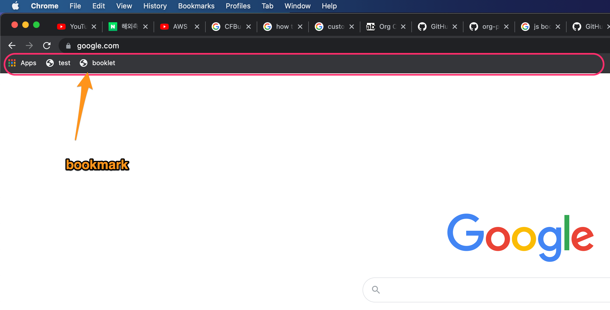

Org-protocol 설정하기
Holy Frege - June 2021
Table of Contents
Goal
web surfing중에 필요한 정보를 제공하는 web page 정보(url,title, drag내용)을 emacs의 org buffer로 전송한다. 이렇게 하기 위해 org-protocol을 사용한다.
process
web browser, osx, emacs로 data가 전송되야 한다.
[web browser]
webpage의 정보를 얻기 위해서 bookmark를 사용한다. bookmark는 name,url로 되어 있는데, url을 입력하는 곳에서 javascript를 사용할 수 있다. javascript를 사용해서 현재 webpage의 url, title, selection영역등을 가져올 수 있다. javascript가 넣어진 bookmark를 bookmarklet 이라고 부른다.

Figure 1: bookmark